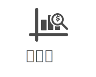
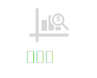
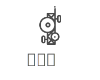
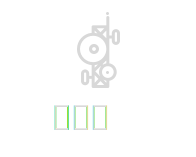
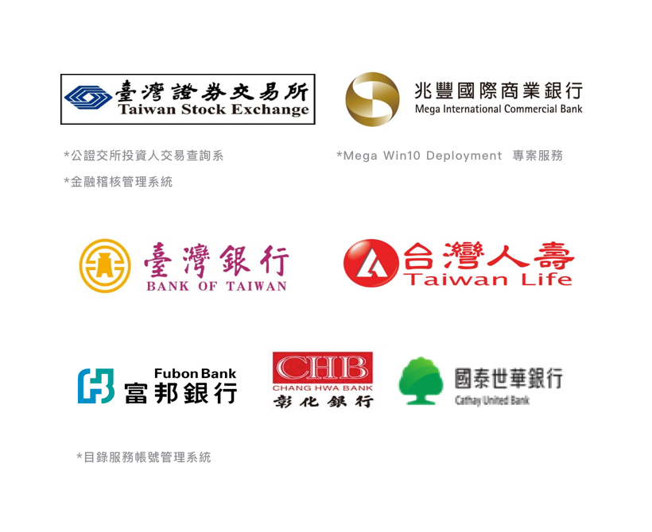
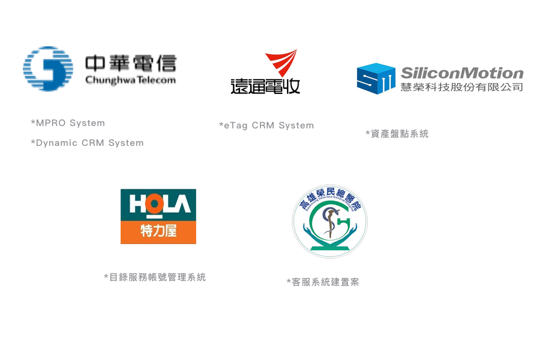

back to top

Business Diagnosis
企業診斷訓練服務
以提升企業組織發展能力為目標，協助規劃人才養成體系，運用科技化 的管理工具，整合豐富的學習資源與知識產品，結合專業的專案管理流程，攜手各專家及專業合作伙伴，提供企業全方位的培訓諮詢服務。
服務宗旨
依據企業之業種、方針及經營者理念為基礎，訂定整體企業的經營策略。過程中將評估企業落實策略所需之人力資源、財務資源、資訊訊息..等，並依據企業預定投入的預算來規劃。
專業服務
企業診斷
| 一、企業經營診斷 | 基礎管理、企業形象、企業文化、戰略規劃、訊息管理、經濟效益 |
| 二、人力資源診斷 | 組織結構、招聘培訓、績效考核、調動管理、福利及獎勵 |
| 三、生產製造診斷 | 產值產量、生產計畫、材料供應、庫存管理、品質提升、設備管理、生產效率、作業調度、檢測檢驗、生產電子化 |
| 四、銷售服務診斷 | 目標戰略、合約審核、客戶服務、廣告管理、銷售策略、人員管理、通路管理、銷售情報、銷售電子化 |
| 五、採購預算診斷 | 採購計畫、預算規劃、採購資訊、採購電子化、供應商管理、採購檢驗 |
| 六、技術開發診斷 | 技術文件管理、新產品規劃、開發過程、獎勵及績效、訊息溝通 |
| 七、財務經營診斷 | 會計原則、報表編製、缺失分析、投資管理、應收帳款、成本控制、利潤分配 |
| 八、行政制度診斷 | 文件標準化、授權制度、稽核制度、獎懲制度 |
訓練課程
| 課程名稱 | 課程學習目標 | 課程對象 | 課程內容 | 課程時數 |
| 商業模式轉型與跨界創新實戰班 Crossover Innovation and Business Model Transformation | 商業模式轉型是企業創新的四種模式之一，也是根本改變企業體質的創新手段。根據近年全球CEO調查的報告顯示，有三分之二的受訪CEO表示，商業模式轉型將是企業未來決勝的關鍵所在，而透過受訪企業的財務分析顯示，重視商業模式轉型的企業，通常都具有較高的營收利潤，究其原因，是商業模式轉型不但能夠「降低成本」及「增加企業彈性」，更有可能「顛覆產業的競爭態勢」。由此可知，認識商業模式，瞭解商業模式與學習如何建構創新的商業模式，以提升企業的競爭能力，將是未來經營管理人員必備的知識與技能。 近年來更伴隨著「Social, Mobility, Analytics, Cloud, Internet of Things」（社交、移動互聯網、大數據、雲計算與物聯網）資訊技術發展與其他先進技術，例如：生產製造、材料技術、生物技術、能源技術等等之結合，此種跨界創新的現象不僅開拓了資訊人員的視野，並同時開啟了企業家「互聯網+」的戰略思維，更促進了產業模式根本性的變革。 本課程將與您一起分享如何藉由藍海策略的工具與手法來進行商業模式的策略創新，並將策略創新產出結果轉換為商業模式創新的過程與方法，進而發揮資訊科技的力量協助您的企業在激烈競爭的環境中成長。 課程結束後您可以獲得以下知識與技能： 1.一套邏輯分析能力，協助企業經理人掌握建構創新模式的技巧與方法，並驅動企業變革，以迎向移動互聯網時代的衝擊。 2.一套系統化的方法論，協助企業經理人瞭解商業模式的基本要素與建構商業模式的過程與方法，使革命性的資訊科技變革能夠真正解決企業的問題，進而發揮資訊人員在產業競爭中的戰略價值。 3.一套實用的藍海策略，協助企業經理人探討如何應用藍海策略的工具與手法來就現行企業商業模式進行策略性的創新，以突破目前營運的框架與困境。 4.一套創新的資訊服務模式，協助企業經理人瞭解如何應用資訊科技在實際的商業情境之外，並能利用「九宮格畫布方法論」來實現「互聯網+」與「創新方法論」的完美結合。 | 1.企業各級主管 2.行銷、業務主管與人員 3.資訊專案主管與人員 4.對互聯網＋科技衝擊現有商業模式與探討因應對策有興趣者 |
1.以生活化案例方式介紹並演練方法論的內容與應用技巧 •移動互聯網對企業發展的思維 •移動互聯網科技應用四大趨勢 2.以既有商業模式進行九宮格畫布套用與演練，並利用該技巧對模式提出修改與完善的方案 •商業模式轉型規劃過程 •商業模式新生代畫布方法論介 紹 3.討論與演練，以系統化、結構化、和相互挑戰激蕩的方式，為商業模式提出創新想法 •商業模式新生代畫布方法論演練 •商業模式轉型在財務、組織、行銷活動、和服務的考量 4.探討在實際資源投入之前的創新規劃 •提升新服務實施成功的可能性 •同時確保資源投資的有效性 | 14 hours |
| 課程名稱 | 課程學習目標 | 課程對象 | 課程內容 | 課程時數 |
| 實現數位轉型與商業洞察實戰班 Realizing Digital Transformation with Commercial Insights | 2009年隨著全球經濟危機的到來，全球企業負責人都面臨著歷史性的難題和困惑：一夜之間，商業活動停滯，現金缺失現象嚴重，導致客戶哪裡去了？ 銷售就是一場戰鬥，業務人員要面對強大的阻力，克服各種困難，最終贏得訂單。此外，互聯網＋的浪潮，如巨浪般衝擊著各行各業，降低成本已成為企業經營顯學，更使得銷售績效達目標難度雪上加霜，針對在浪潮風口的IT服務團隊更形成巨大壓力。 為了有效因應不斷增加的挑戰，企業主管不厭其煩的指導員工進行換位思考，強調【站在客戶角度思考，建立成為客戶策略夥伴的價值】是與客戶成為雙贏的必要條件之一。然而，一般員工的養成中多偏重於產品知識、解決方案規劃能力，對於如何換位思考，作為和高階主管對話的能力缺乏一套有效的方法，難以建立獨特視角的商業洞察(Commercial Insights)。 對於企業的經營管理而言，不同行業的營運必有其特定的知識與特性，但亦有其相似關注的重點，例如：營收、成本、資本投入、客戶滿意、產品上市週期、存貨管理、商業模式…等，有些是財務指標，有些是管理指標。如何能夠建立業務人員能夠瞭解企業運營的基本知識，培養業務人員在企業運營的換位思考能力，建立與高階主管交流的對話能力，同時養成利用客戶的異議來促進雙向溝通的習慣，是企業工作團隊共同的課題之一。本課程目標即透過通用方法論的講授與演練，不僅建立主管、員工換位思考的理論基礎，更利用實際案例為目標，進行方法論套用的實際演練，協助企業建立數位化轉型(Digital Transformation)見解與獨特視角的商業洞察，作為與客戶高層進行對話、建立策略夥伴關係的基礎。 本課程結束後您可以獲得以下知識與技能： 1.學習建立產業趨勢分析、數位化轉型思維、競爭力分析、商業模式創新思考分析、與使用因循守舊痛點的方法論的能力，並培養敏銳的商業洞察力以説明客戶經營團隊進行數位化轉型。 2.學習並應用普遍且簡單的工具，實現能夠將邏輯思考落地的技巧。 3.應用實際客戶情境，具體完成方法論和工具的應用和技巧演練。 | 1.企業各級主管 2.行銷、業務主管與人員 3.資訊專案主管與人員 4.對實現數位轉型與探討實務作法有興趣者 |
1.銷售技巧與業務人員價值 •產品導向銷售不足？解決方案銷售已死？ •銷售的價值﹣建立【關係2.0】能力，創造資訊不對稱的價值 2.建立產業知識與數位化轉型思維(Digital Transformation) •資料分析 – 企業年報和互聯網開放資訊 •培養對客戶產業知識瞭解能力與創新思維 •建立以互聯網＋顛覆五力分析之邏輯思考 •實際客戶應用與演練 3.客戶核心競爭力與發展策略分析 •SWOT現況基本分析 •SO/ST/WO/WT競爭力策略進階分析 •實際客戶應用與演練 4. 客戶潛在需求與問題分析 • 挖掘守舊之痛 • 金字塔要因分析方法論介紹 • 金字塔要因分析應用範例介紹 • 實際客戶應用與演練 | 14 hours |
| 課程名稱 | 課程學習目標 | 課程對象 | 課程內容 | 課程時數 |
| 創新軟實力 III – 當責與高效協作 Accountability for Effective Collaboratio | 大多數企業都因為管理上的錯誤而失敗，但是相關的企業主和高階經理人卻都不願意承認這個事實，換來的是費心變出五花八門的藉口，如：資源不足、員工懶散、到競爭對手非理性的破壞等等。從大型企業集團總裁到修車廠老闆，都沒有人願意為自己的錯誤判斷和種種閃失負起責任。是的，失敗是商場和人生中經常發生的一部分，但是如果嘗試逃避這些不足與失敗，就只會延長痛苦和延遲矯正的機會。唯有為成果負起更多的責任，才能夠讓一個人、團隊、或整體企業回到成功的道路上。 本課程以《當責，從停止抱怨開始》（Roger Connors 、Thomas Smith 、Craig Hickman 合著）為基礎，跟隨者《綠野仙蹤》的旅程，以桃樂絲為領導者，帶領著膽小獅、錫樵夫、和稻草人一路上追求均衡的「勇氣、熱情、智慧」的價值，到達目的地翡翠城的故事，說明當責心態對於協作的重要性。透過書籍閱讀分享、案例交流討論，以一天時間預期達到下列目標 1. 以當責態度勇於任事，創造關鍵績效 2. 建立水平線上思考，脫離受害者循環 3. 建立團隊共同語言，提升跨部門溝通協作，協助團隊目標達成 4. 激發動機，喚起內在激勵：個人當責、團隊當責、企業當責 | 1.企業各級主管 2.儲備幹部、資深員工 |
1.職責與當責 • 定義「職責」與「當責」 • 調研 – 您的當責指數 2.水平線思考 • 講解受害者循環 • 調研 – 您在水平線下？ • 案例討論 3.面對它 - 凝聚勇氣，正視現實 • 講解 • 調研 – 您的勇氣指數？ • 當責與反饋迴路 • 案例討論 4.扛起來 - 找一顆心，承擔責任 • 講解 • 調研 – 您的承擔責任指數？ • 案例討論 5.想辦法 - 取得智慧，解決問題 • 工欲善其事 – 方法論與當責 • 方法論工具介紹 – 心智圖、PDCA法則、ARCI法則？ • 案例討論 6.去執行 - 運用方法，著手完成 • 講解 • 調研 – 您的著手完成指數？ • 案例討論 7.建立【當責】組織與文化 | 7 hours |
| 課程名稱 | 課程學習目標 | 課程對象 | 課程內容 | 課程時數 |
| 創新軟實力 IV – 向上管理實務研討 Upper Management Skills | 在職場上，只要不是自己站出來做老闆的，基本上至少都會有一個「上頭」存在。無論是剛進公司的小職員、剛升領班的外場服務員、剛被降級的正職員工、或者是直接面對董事長的總經理，一日社會人，便終身得體會「人在江湖身不由己」之感。無論是否身負管理職責，似乎「討好」、「服從」、或者「體恤」上司，這些永遠都是學不完的生存之道。然而想在某個領域佔有一席之地、想要升遷加薪，無論你的目的是什麼，欲向上提升，對你下命令的主管絕對是數一數二重要的關鍵。「為什麼」要做好向上管理容易理解，但是「如何做」依然是值得關注且需要不斷改善的課題。課程以80%內容由講師引導進行討論與分享，預期達到目標：1. 向上管理對團隊和個人的關鍵影響。2. 「如果老闆是客戶」的視角，探討如何有效向上管理。3. 簡單實用的向上管理工具 | 1.企業各級主管 2.儲備幹部、資深員工 |
1.什麼是向上管理•分組討論與分享•講解與摘要 2.為什麼要做好向上管理 •分組討論與分享 •講解與摘要 3.如何做好向上管理 •換位思考 I – 如果您是老闆 •換位思考 II – 如果老闆是客戶 4.向上管理技巧《一》建立信任 • 分組討論與分享 5.向上管理技巧《二》了解需求 • 換位思考 • 分組討論與分享 6.向上管理技巧《三》主動提議 • 帶著想法找老闆 • 分組討論與分享 7.向上管理技巧《四》有效說服 • 量身定制 – 發揮變色龍指數 • 分組討論與分享 8.向上管理技巧《五》化解異議 •LSCPA法則 •分組討論與分享 | 3 hours |
How to use marketing influencing your personal life and making your life happy
1. What is marketing 2 hrs
a. By listening a real 4P integration marketing case to understand what is marketing.
2. Investment and life cycle plannin 2 hrs
a. By using investment concept to identify and develop personal life cycle.
3. FAB training 2 hrs
a. a. How to know the basic selling skill. By using this skill, student can understand how to sell himself/herself.
4. FAB role play 2 hrs
a. After FAB lecture, by role play game, students should know how to use it in the real life
5. Mr. Right 2 hrs
a. By using an interesting and real personal case to understand the way of using SWOT in personal life
6. Team work and SWOT presentation 2 hrs
a. By using a simple method to understand the difference between you and your counterpart. After learning this simple skill, student can use it in their personal and make a good and healthy communication.
7. How to write a good plan? 2 hrs
a. By using SMART concept and a real case to write an executionable plan
8. How to be a good PM? 2 hrs
a. After learning course 1-6, students should integrate the content and learn to be a good PM in his life
9. How to survive in the working place? 4 hrs
a. After students learn the above skills, the final stage is how to use them in the working place. During this course, students will learn two important concepts to change their mind set and attitude.
10. Marketing plan presentation 4 hrs
a. After learning whole courses, student need practice to write a marketing plan and present it to show their learning.
成功案例





